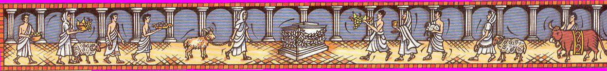

|
MAGIA, CULTO y OFRENDAS
Cualquier acción cotidiana en la vida de un romano, era un rito, el día pertenecía a su creencia o culto. Por la mañana y por la tarde invocaban a las almas de sus antepasados, los Penates. Su comida la compartían con sus divinidades domesticas, y a estos nunca les faltaba sus ofrendas. Cada acontecimiento, nacimiento, matrimonio, aniversario................estaba acompañado por su ceremonia, para dotarlo de una protección mágica. Los romanos llevaban multitud de amuletos, se levantaban con el pie derecho, abandonaban su casa con el pie derecho, se cortaba el pelo en plenilunio. Observaba los pájaros e incluso analizaban las palabras fortuitas por si les daban un augurio "fasto" o "nefasto"; la lluvia, el nacimiento de un animal deforme, deformaciones en vísceras, etc. Todos los días realizaban sus ofrendas o sacrificios en su casa, una vez al mes los realizaba en su Curia, dos a más veces al año con su "gens" y además rendía culto a los dioses de su ciudad. Cuando tenían una duda, rápidamente acudían al oráculo para saber que les iba a deparar el futuro y como evitar los peligros venideros. Estaban obsesionado con el mal de ojo, el fascinatio o fascinum. Cuando comenzaron las confrontaciones con otros pueblos y su expansión, adoptaron nuevos dioses. Al mismo tiempo la clase dirigente se apropio de las creencias y de los cultos, ya que empezó a ver en esta nueva "religión" una poderosa arma para gobernar. Con Augusto y el inició de la época Imperial se unió el culto privado y el público, debido a que todo emanaba del Emperador. Gran cantidad de dioses orientales, empezaron a ocupar su sitio en el Panteón. Todos los dioses eran respetados por los romanos, todos eran útiles en su vida, no había que ofender y entrar en guerra con un dios del adversario, había que invitarlo a Roma y tenerlo contento con ofrendas. Cada dios tenia su lugar y momento en la vida de un romano, los dioses "menores" se encargaban de las actividades diarias y los llamados "mayores" atendían las necesidades de Estado, ya que este era lo más importante en la vida de un ciudadano. En el foro se instaló un altar al dios desconocido, por si acaso. Persiguieron tres cultos, el de Baco, por sus extraños ritos, a los judíos por negarse a rendir culto al Emperador y por ultimo a los cristianos, por perturbar el orden público y querer imponer su dios como único y verdadero. Cuando la fiesta religiosa lo indicaba, los romanos se reunían en asamblea, cualquier desastre o derrota en un día determinado tenía una causa; los dioses estaban irritados o ausentes por falta de culto u ofrendas; y ese día del año seria por siempre nefasto. El Senado solo podía reunirse en un templo, de lo contrario sus decisiones no serian válidas por la ausencia de los dioses en la reunión. Antes de deliberar el presidente ofrecía un sacrificio sobre el altar del templo y realizaba una oración para que los dioses les guiaran en sus decisiones. Los dioses que regían la vida pública estaban en la denominada Triada Capitolina. En los tiempos antiguos estaban representados por Júpiter, Marte y Quirino, pero en la época clásica los dioses representados eran Júpiter, Juno y Minerva. Además existían los dioses Superi, (celestes) los Inferi (subterráneos) y los terrestres, intermedios donde; se ubicaban los Indigetes (indígenas) protectores de la tierra y los Consentes, que eran un grupo de 12 dioses que asesoraban a Júpiter. Roma, la magia corría por sus venas; los arúspices se hicieron muy populares; se formaban en estas artes y la tradición etrusca era la más considerada, los mejores adivinos del Imperio. Interpretaban las vísceras de los animales sacrificados, conocían los secretos del rayo y sabían dar respuesta a cualquier hecho o suceso que atemorizara al pueblo. También habían sacerdotes que leían el oráculo tirando los dados, otros trazaban líneas imaginarias en el cielo a la espera del paso de un ave para conocer la voluntad de los dioses e incluso había interpretadores de sueños en los mercados Los romanos generalmente adoraban divinidades femeninas que identificaban con la Madre Tierra, pero la fuerza de la fecundación la depositaban en el fascinum, el falo. El falo era un objeto de culto y reverencia, para los romanos el falo poseía un sentido mágico y protector. Las figuras del dios Príapo o del dios Faunos eran representadas con un gran pene en erección, para protegerse del mal de ojo, para tener fertilidad y riquezas. Como hemos mencionado con anterioridad, los romanos estaban obsesionados con el mal de ojo. Llevar colgado un falo del cuello era una señal de protección contra todo mal, adornaban sus casas con ellos y sus monumentos; era la mejor arma para combatir todo mal o quien sabe; si el deseo proyectado a través de la mirada; la fuerza, el magnetismo, la fascinación o el encanto de unos ojos pueden alterar la vida de una persona. Han aparecido falos en dinteles de puertas, paredes, suelos, y obras públicas como en las murallas de Ampurias y Cástulo, en el acueducto de los milagros, en su arco central, en sillares de edificios de Córdoba, Clunia, etc. ¿A quien no le han embrujado unos ojos? Eran muchos los amuletos usados como; la fica, higa, puño cerrado con el dedo pulgar entre el dedo índice y corazón; otro amuleto era el ojo, pintaban ojos por todas partes, puertas, barcas, etc., los hacían de cristal, como colgantes, monedas agujereadas con el rostro de Alejandro; El dios Jano con sus dos caras se colocaba en la puerta de entrada, para que vigilara el interior y el exterior de la casa; insignias militares, con deidades grabadas. Los pectorales que se ponían sobre el cuerpo los legionarios eran para que les confiriera poder y fuerza para ser invencibles; no acudían a la guerra sin su anillo o colgantes de plata, oro o hierro que los protegiera; los soldados llevaban los brazaletes en el brazo izquierdo para que se alejara la muerte; diversidad de amuletos realizados en hierro porque pensaban que al estar fabricados con hierro los hacia invulnerables; Gemas y piedras preciosas, el rubí te dotaba de valor en el combate, el granate para encontrar los objetos perdidos, el topacio te alejaba del miedo, el coral y la turquesa evitaban los accidentes, el zafiro evitaba picaduras, la amatista evitaba los envenenamientos, el ámbar símbolo de la curación, protección y de la belleza, etc.. No olvidemos que los metales también eran empleados, se creía que cierta radiaciones eran beneficiosa, como el oro asociado al sol se usaba para la fecundidad y protección; la plata para evitar los peligros en los viajes; el estaño asociado a Júpiter para el éxito en los negocios y la elocuencia; el cobre apaciguaba a los enemigo; el plomo asociado a saturno, planeta de la vida y la muerte, para nacimientos y muertes. También eran usados los clavos y los nudos como objetos mágicos. Se escribían unas palabras sobre el suelo o la pared y al clavar un clavo esa persona, enfermedad, suceso o juicio se quedaba "clavado" y no avanzaba. En Roma se realizó este ritual cuando una epidemia azoto en la ciudad, se nombraba a un dictador que era el encargado de clavar el clavo en el templo de Júpiter Capitolino para que la epidemia no causara mas bajas y la ciudad se librara de ella. Los brujos romanos realizaban unas tabillas escritas con palabras mágicas, que eran clavadas en los ataúdes con clavos de bronce para aumentar la fuerza ligadora y obligaba al espíritu del muerto resentido a obedecer sus ordenes. Livio nos cuenta que al celebrar los juegos romanos, según la tradición etrusca, se clavaba el clavus annalis, con la intención de clavar el tiempo o señalar los años. Los nudos eran muy usados en Roma como instrumento mágico. El famoso nudo hercúleo de dos lazos. Por ejemplo, las romanas recién casadas llevaban un cinturón de lana atado con el lazo de Hércules, y el marido era el único que desataba ese nudo en el lecho. Así se aseguraba la fertilidad de la novia y su virtud. Los romanos crían que cruzando los dedos, los brazos o las piernas en presencia de una embarazada se podría malograr un parto. Esta creencia se puede leer en la leyenda del nacimiento de Hércules, como Galintias engaña a Ilitía. Los brujos creían en el poder de la palabra, el Don del Verbo. Se creía que si se enunciaba un algo deseado, equivaldría al deseo mismo y aseguraban que un conjuro bien realizado era infalible, no existían las distancias ni el tiempo para ellos, solo necesitaban algo que hubiese estado en contacto con una persona, para poder influir en ella. Tenemos hechizos de la época: "Milagroso hechizo de amor; toma cera o barro de una pella, de la que sirve para modelas; y moldea dos figuras, masculina y femenina,..........escribe sobre la figura de la mujer...........sobre el pecho del hombre............" Curiosamente los romanos también practicaban una especie de Vudú parecido al haitiano. Lo realizaban sobre unas muñequitas de plomo, cera o arcilla, sobre la que escribían sus hechizo o clavaban su agujas. La llamada magia negra era algo común en Roma. Sobre tabillas de plomo, tabellae defixionum, escribían sus maldiciones, invocaciones o conjuros, con la finalidad de causar mal a sus enemigos. Las realizaban sobre plomo porque era pesado y frió como el mundo de ultratumba, con un "pincel" de bronce; en luna llena y si podía ser en un cementerio. La letra más famosa para hacer magia, eran las letras Efesias, no se conoce su origen , ni su significado, tampoco tiene traducción, pero tenían un poder sobrenatural. Ejemplos de inscripciones en plomo, halladas en Córdoba: " Quédese mudo el liberto Priamo de todas formas". " No permitáis que alguien pueda decir palabra alguna sobre la herencia.....". " Enmudezca uno por uno en locura y dolor....". Las divinidades invocadas para estos fines eran las infernales, y generalmente dioses menores. Las tabillas eran depositadas para que fueran más eficaces en tumbas de personas fallecidas de forma violenta. Según nos narra Seutonio, la muerte de Germánico (Tiberio), fue inesperada y quienes lo hallaron muerto buscaron signos mágicos y encontraron bajo de su cama tabillas de plomo y huesos. Con estas maldiciones se intentaba provocar fiebres, ceguera, mudez, perdida memoria, insomnio, ruina, etc. Seutonio también nos relata como un hombre se curo del hechizo, ..........unos pescadores encontraron un cofre, lo abrieron y en su interior había una estatua de bronce con las manos y pies atravesados por clavos. A medida que fueron desclavando los clavos, la parálisis de Teófilo empezó a desaparecer............ Los espejos mágicos eran utilizados para convocar apariciones, consultar a los muertos, para invertir el mal realizado. Solo los niños y las mujeres vírgenes eran capaces de dominar la fuerza de la adivinación. Los seguidores de Isis en las ofrendas y procesiones llevaban espejos en las espaldas, en la llamada magia de Venus, el espejo era utilizado para conseguir la belleza y la eterna juventud como la misma diosa. Te suena la conocida la frase " espejito, espejito .......". No olvidemos que para los etruscos, los espejos eran un símbolo de la verdad y han aparecido en numerosísimas estelas funerarias, como llamada a la diosa de los muertos en busca de inmortalidad y resurrección. También utilizaban drogas, pócimas, filtros de amor, realizaban ofrendas al fuego y demás artes mágicas, posiblemente nuestros brujos deberían estudiar y conocer las artes mágicas de los romanos.
La religión romana y en concreto los cultos públicos estaban dirigidos por los sacerdotes. Estos se agrupaban en los colegios o asambleas sacerdotales donde aprendían las técnicas del culto. Los
primeros romanos adoraban a las fuerzas de la naturaleza que residen en
los seres y la naturaleza, la numina. Estas adoraciones no tenían
representación humana. Posteriormente con el tiempo se fueron perfilando
algunas de las divinidades y se les doto de un cuerpo humano. Los acontecimientos religiosos estaban regidos por un calendario de 334 días basado en los ciclos de la luna. de esos días, 235 eran considerados fastos, laborales de los cuales 192 eran comitiales, donde se podían realizar actividades políticas. El resto de días, 109 eran considerados nefastos, no se realizaba ninguna actividad y se celebraban las fiestas oficiales dirigidas por lo sacerdotes. Existían 45 ritos diferentes. Se solían sacrificar pequeños animales excepto en los cultos que requerían un caballo, bueyes o jabalíes. Habían festividades coma la hecatombe donde se sacrificaban cien bueyes o los suovetaurilia que se sacrificaba un cerdo, un cordero y un toro. Dependiendo de la divinidad a la que se ofrecía el sacrificio se escogía el sexo, el color o la edad del animal. Después del sacrificio los arúspices, examinaban las entrañas de los animales y presagiaban los hechos venideros. Si se daba el visto bueno las entrañas se quemaban y con la carne se hacían un festín. En la ceremonia junto al sacrificio se realizaban las libaciones del vino y el pan ritual.
FUNDACIÓN DE ROMA Roma fue fundada en la colina mas alta de las siete colinas, el Palatino, en abril del 753 a.e.c.. En esta zona aún se conservan restos de una aldea del siglo VIII a.e.c. La Roma Quadrata, fue fundada por el Rey Rómulo. Abrió un surco en la tierra con una reja de arado, de la que tiraban un toro y una ternera blancos; y así quedo delimitado el perímetro de la ciudad. Al pasar por los lugares donde irían las puertas de la ciudad Rómulo levanto el arado para que no marcara la tierra, ya que se consideraba el trazado sagrado y nadie debía atravesarlo. Esta ceremonia se hizo extensiva a todas las ciudades fundadas por Roma, y eran realizadas por un sacerdote vestido con túnica blanca. Los dioses puramente romanos estaban agrupados en cinco categorías: - Los dioses de la naturaleza, los "indigetes", Flora, Silvano, Fauno.... - Los dioses tutelares, Manes, Lares y Penates. -Los grandes dioses astrales, como Júpiter, Marte,.... - Los seres sobrenaturales, Musas y Gracias. - Las personificaciones, como el Emperador o las Virtudes.
Los romanos eran un pueblo muy religioso, tenían sus propias divinidades nativas, pero es difícil saber que adoraban en sus primeros tiempos. Sus creencias se basaban en dos conceptos, el numen que era una entidad abstracta y el genius que era el ser o fuerza que nacía con cada individuo o lugar, al cual iba ligado y tenia como misión la conservación de su existencia. También la Naturaleza, la Madre Tierra, con sus plantas, árboles y frutos estuvo presentes en estos inicios y como no, contaban con sus lugares sagrados donde realizaban sus cultos y ofrendas.
UNA CASA UN TEMPLO La casa de un romano, era su templo particular. Cada casa estaba protegida por amuletos, pinturas e inscripciones mágicas. Cada divinidad tenia un lugar en la casa, que debía de proteger. Los dioses se dividían en Manes, Lares y Penates. Los Manes eran venerados para rendir culto a los antepasados de la familia. los Lares al principio cuidaban las cosechas del fuego, las sequías y el pedrisco, pero con el tiempo se encargaron de la protección de la familia y su armonía. En un rincón de la casa tenían una capillita en la que todos los días al levantarse realizaban sus oraciones y se ofrendaba el primer fruto de las cosechas. Eran venerados encarnando la apariencia de un joven con túnica blanca, en una mano llevaba una copa y en la otra un cuerno de la abundancia. Mas allá de los limites de la casa estaban los Penates, que se encargaban de proteger la casa y sus propiedades; las aras de los Penates se colocaban en los limites de la propiedad y eran como una especie de mojones sagrados que limitaban la propiedad y eran reconocidos esos limites por las generaciones venideras. Los más pobres que no poseían una casa o los esclavos, levantaban altares en le campo o en los cruces de caminos donde depositaban sus ofrendas y exvotos; para protegerse ellos y los suyos o conseguir el favor de los dioses. El Genium (el genio) acompañaba a cada personas desde su nacimiento hasta su muerte, estaba encargado en de su protección. Más tarde comenzaron a proteger a familias, grupos, legiones, colonias, ciudades....... Sus funciones posteriormente fueron representadas por los ángeles de la guarda y los santos patrones.
|
|
DIOSES, DIVINIDADES y ENERGÍAS
|
|
 |
|
DEIDADES POPULARES Eran cultos agrarios, cuando no existían los cultos domésticos. Eran los únicos dioses que conocía la plebe.
|
||||||||||||||||||||||||
|
LOS DIOSES "Indigetes" Eran los protectores mágicos de la ciudad y sus nombres eran secretos
|
EL PANTEÓN ROMANO
|
||||||||||||||||||||||||||||
|
|
DIOSES PERSONALES
|
| CARMA | Diosa protectora de los órganos vitales del hombre |
| CECULO | Se encargada de apagar la luz de los ojos de los moribundos |
| FELICITAS | Era la diosa de la felicidad |
| ESTIMULA | Diosa que impulsa a los hombres a obrar |
| FASCINO | Dios de la fuerza masculina |
| FERONIA | Diosa de la Salud |
| CLOACINA | Diosa del placer sexual |
| LIBURNO | Dios del placer sexual |
| CUBA | Diosa de la infancia |
| CUNINA | Diosa que protege a los niños del mal de ojo |
| FARINO Y FABULINO | Enseña A los niños los primeros sonidos y palabras |
| DIESPITER | En el parto conduce al niño hacia la luz |
| ANTEVORTA | Diosa de los nacimientos y la poesía (1 de las 3 diosas) |
| ESTRIGES | Seres monstruosos que se dedicaba a alterar el sueño |
| BONA DEA | Diosa de la fecundidad |
| INCUBUS | Los encargados de provocar pesadillas nocturnas |
| INTERCIDONIA | Se encarga de vigilar que Silvano enturbie el sueño |
| FUONIA | Diosa que evita las hemorragia en las embarazadas |
| FEBRIS | Dios que protege de la fiebre |
|
DEIDADES PRIVADAS
|
| MANES | Espíritu de los muertos con forma de serpiente |
| LARES | Deidad protectora del hogar |
| LARES PRAESTITES | Los dos vigilantes de las murallas |
| PENATES | Protectores del bienestar de la familia |
|
NUEVOS CULTOS
|
|
MITRA: Dios de la luz y la
oscuridad, del bien y del mal. Origen Irán. CIBELES; Gran madre. Diosa de la fertilidad y la vida, de la muerte y del renacimiento. Origen Turquía. ISIS y SERAPIS: Dioses del ciclo de la muerte y el renacimiento. Origen Oriente. BACO o DIONISIOS: Dios del vino y de las fuerza que proporciona vida.
|
|
DIOSES DE LOS CAMINOS
|
| HEKATE | Diosa de tres cabezas, de la magia y las saturnales |
| COMPITALES |
Las dos deidades encargadas
de las encrucijadas de los campos y ciudad
|
|
GLOSARIO DE DIOSES, DIVINIDADES.......
ABUNDANTIA (Abundancia) Era una divinidad representada por una matrona, de pie o sentada en su trono. Solía representarse sujetando en una mano un cuerno de la Abundancia (cornucopia), rebosante de flores y frutos, mientras que con la otra mano sostiene un haz de espigas de trigo. Simboliza la riqueza y el bienestar. AENEAS (Eneas) Héroe de Troya, hijo de Venus y Anquises. Tras la destrucción de Troya, escapó por mar, junto a otros compatriotas, llevando consigo a su esposa Creusa, a su hijo, Julo y a su anciano padre. Buscaba una nueva tierra donde poder refundar su amada Troya. Después de un largo viaje por el Mediterráneo, en el que murieron su esposa y su padre, Eneas llegó a Italia, y allí recibió la hospitalidad del rey, que le concedió la mano de su hija Lavinia. Tras varias victorias con los pueblos latinos, fundó una nueva ciudad que se llamo Lavinia, en honor a su nueva esposa. Sus descendientes reinaron sobre otra ciudad, Alba Longa, llamada así porque Eneas, al poner pie en la península Itálica, encontró una cerda blanca (alba) que acababa de alumbrar treinta lechones. Rómulo y Remó pertenecían a la estirpe real de Alba, y por lo tanto eran, descendientes de Eneas. AEQUITAS (La Equidad) Divinidad representada por una mujer que sostiene una balanza con una mano, y con la otra, un cuerno de la Abundancia, rebosante de flores y frutos, o en otras representaciones, un cetro. Esta alegoría simboliza la justicia en las relaciones personales y en los tratados. AETERNITAS (La Eternidad) Alegoría representada por una matrona que lleva consigo diversos objetos: un globo (en ocasiones con un ave fénix), una antorcha o un cetro, representaciones del sol y la luna. Simboliza la estabilidad del poder de Roma. ACA LARENCIA Era la divinidad de los suburbios y personificaba la tierra fecundada. Una leyenda la presenta como una prostituta de la que nació el mito que Rómulo y Remo habían sido amamantados por una loba. El apodo para las mujeres públicas era el de “loba”. AION Dios del tiempo. su festividad se celebra el 6 de enero. AIUS LOCUTIUS Era el dios de la infancia que enseñaba a los niños sus primeras palabras. ANGERONA Diosa representada con una actitud enigmática con la boca vendada, por lo que se pensaba que se trataba de una diosa infernal, por la relación entre el silencio y la muerte. Otra interpretación afirma que la intención del silencio era encontrar el pensamiento. ANNA PERENNA Antiquísima Diosa romana, a la que se le rendía culto en un santuario a las afueras de Roma, en la Vía Flaminia. Se decía que había recibido la condición de diosa porque durante la secesión de la plebe en el Monte Sacro fabricó tortas para venderlas al pueblo y paliar el hambre. También Se la consideraba la diosa de la luna o diosa del año, ya que cada mes renovaba su juventud durante el curso del año, por lo que se la vio como la diosa que otorgaba una larga vida y todo aquello que contribuyera a prolongar la existencia. ANNONA (La Subsistencia) La annona era la reserva de trigo de los graneros públicos a cargo del Estado, este trigo era dado al pueblo en época de hambruna o mala cosecha; o se vendía a bajo coste. También se denominaba así, al avituallamiento militar. Esta alegoría, era representada por la figura de una mujer que sostiene haces de espigas en sus manos; otras veces aparece representada a su lado la proa de una nave (rostrum). Esta alegoría simboliza la protección de los víveres y del aprovisionamiento.
ANTEVORTA
Diosa de los nacimientos y la poesía.
APOLO
Dios del
Sol, hijo de Júpiter y Latona y hermano de Diana. Estaba consagrado a
numerosas actividades, como la música, la medicina o la adivinación, y las
artes en general. Protegía rebaños y manadas. Se le representa como un joven
que lleva una lira y una rama o corona de laurel, árbol que le estaba
consagrado. ARGENTINO Hijo de Esculano. Era el dios de las monedas de plata. ASCENSO Dios de las laderas y las cuestas. AURORA Divinidad del amanecer. BABUNA La protectora de los bueyes. BACCHUS (Baco) Hijo de Júpiter y Semele, también se le conoce como Liber, y es una antigua divinidad itálica, protectora de la agricultura, especialmente de la vid y del vino. Fue asimilado al dios griego Dionisio. Se le representa como un joven con su cabeza coronada de hiedra; generalmente se le suele representar de pie, sosteniendo una copa con una mano, y un racimo de uvas, o un tirso, vara recubierta de hojas de hiedra o parra, con la otra mano. BELLONA (Belona) Era la diosa de la guerra o de la victoria, hermana o esposa de Marte. Se la solía representar con un aspecto horripilante, parecida a una de las Furias. En las afueras de Roma tenía un templo, construido por Apio Claudio el Ciego durante las guerras samnitas. En el recibía a las embajadas extranjeras, dado que estaba prohibido que se hiciera dentro de la ciudad. BONA DEA Esposa de Fauno. Era la diosa de la fecundidad y modelo de castidad y virtud. Un día se embriagó y su marido la azotó hasta matarla. Arrepentido instituyo un culto en su honor. BONUS EVENTUS (Buena suerte) Personificación de los finales felices. Es el genio de la buena suerte, y aparece representado por un varón situado ante un altar, sujetando una pátera, plato de poco fondo usado en los sacrificios antiguos; y otras veces se representaba con un cuerno de la abundancia. BUEN SUCESO Dios que velaba por las cosechas y al que se acabo invocando ante cualquier circunstancia de la vida. Se le representa como un joven imberbe con un cuerno de la abundancia en una mano. CACIO Dios que dictaba a los jóvenes del sentido de la perspicacia. CAN CERBERO Perro con tres cabezas, guardián del mundo de los muertos. CARITAS Figura femenina de pie, con la pierna diestra alzada y a los pies un ara, que representa la caridad. CARDEA Diosa protectora del quicio de la casa. CARMENTA Originalmente era la ninfa de las aguas. Tenía poderes mágicos y el Don de la adivinación. Con el tiempo paso a ser la protectora del parto de la mujer. CARNA Protectora de los órganos vitales del hombre. CECULO Dios que se encargaba de cerrar los ojos a los muertos. CERES Diosa hija de Saturno y Cibeles. Equivale a Deméter en Grecia. Se la representa como una matrona, con velo o coronada de espigas, sujetando un cuerno de la abundancia en una mano, y con la otra, una antorcha, un arado o un haz de espigas, atributos que la identifican como divinidad protectora de la agricultura. CINXIA Diosa nupcial que la noche de bodas, soltaba el ceñidor del vestido de la novia, desatando el nudo mágico que había guardado su virginidad. CLARITAS Personificación de la claridad y la luz, que se representa con tipos iguales a los del Sol. CLOACINA Diosa del placer sexual. COINCUENDA, ADOLENDA, COMOLENDA Y DEFERUNDA. Las cuatro protectoras de los árboles. COMPITALES Las dos deidades encargadas de las encrucijadas de los campos y ciudad. CONDITOR, CONSO O CONVECTOR Los protectores de las mieses y las cosechas. CUBA Diosa de la infancia. CUNINA Diosa que protege al niño del mal de ojo. CYBELE (Cibeles) Cibeles es una divinidad de origen oriental conocida también como Rea en Grecia. Su culto llego a Roma en el siglo III a.e.c. durante la II Guerra Púnica y se le consagraron unos juegos: los Megalesios. Se la representa como una mujer sentada en un trono o en un carro tirado por dos leones, con una corona de torres símbolo de las ciudades donde impera. En la mano izquierda lleva el tinpanón, tambor o un cuerno de la abundancia, o un cetro o un puñado de espigas y amapolas y un espejo. Compartía con Júpiter el dominio del mundo. Augusto sintió una gran devoción por ella. La diosa Cibeles, diosa de la Tierra, de la fecundidad de la agricultura, de las fuerzas naturales del hogar y la familia. CLEMENTIA (La Clemencia) Divinidad representada por una mujer que sujeta un cetro con una mano, y con la otra mano una rama de olivo. A menudo se representa apoyada en una columna. Simboliza el trato compasivo concedido al enemigo vencido. Virtud que modera el rigor de la justicia CONCORDIA (La Concordia) Divinidad representada como una figura femenina que lleva diversos objetos se parece su representación a la de la Abundancia con un cuerno de la Abundancia, cetro, rama de olivo, espigas y pátera. Cuando esta representada como concordia militun sujeta dos estandartes. Equivale a la Homonoia de los griegos. En Roma, tenía un templo muy antiguo junto al monte Capitolio. Simboliza la buena armonía entre los individuos, entre las comunidades y los pueblos. CLOACINA Diosa sabina del placer sexual y las pasiones brutales. CONSTATIA (La Constancia) Divinidad representada como una figura femenina que se lleva la mano hacia la cara. A menudo, lleva indumentaria militar y enarbola una lanza. Simboliza el coraje y la perseverancia. CUPIDO Dios del amor hijo de Venus. Se representa como un niño con alas y un arco con flechas. Si las flechas eran de oro, producían amor; pero si las flechas eran de plomo, producían odio. DEA Divinidad importada desde África, simboliza la brillante madre. DEIS PATER Dios de los infiernos DIANA La diosa Diana, Artemisa para los griegos, es hija de Júpiter y Latona y hermana de Apolo. Es la diosa de la caza y la vida agreste; por ello, se la representa con un arco y acompañada de un perro o un ciervo. Se la considera también diosa de la luna, y a veces aparece representada con un cuarto creciente sobre su cabeza. Si aparece con el título de Lucífera (portadora de la luz, diosa de la luna), se la representa sujetando una larga antorcha. Puede llevar los títulos. DIESPITER En el momento del alumbramiento esta deidad conducía al niño hacia la luz. DIOSCURI (Los Dióscuros) Cástor y Pólux, son hijos gemelos del dios Júpiter y la mortal Leda, a quien Júpiter sedujo transformado en cisne. Se representan como dos jóvenes con sendos caballos, al galope o parados. Sobre sus cabezas brillan dos estrellas, que nos recuerda que fueron convertidos en astros por su padre que les concedió la inmortalidad. En las primeras monedas romanas de plata se les representaba como al dios Jano, mirando cada uno hacia un lado. En algunas monedas del Bajo Imperio se representa a Cástor individualmente. La constelación de Géminis. EDUCA Diosa de la infancia que enseñaba a comer a los niños. EOLO Dios de los vientos. EPONA La diosa protectora de los caballos. ESCULANO Divinidad romana que presidía la acuñación de las monedas de cobre. ESCULAPIO Dios de la salud y la medicina. Hijo de Apolo y padre de Salus. Su símbolo es un bastón con serpiente. ESTIMULA Diosa que anima a los hombres a trabajar. FABULINO Divinidad que enseñaba a los niños las primeras palabras. FABULINO Y FARINO Divinidades que enseñan a los niños la primeras palabras. FASCINO Deidad de la fuerza masculina. FAUNO Era una divinidad agrícola, que se asocia con el dios Pan. Hijo de Pico y nieto de Saturno. Fauno significa “bienhechor”. Esposo de la Ninfa Marsia, tuvieron por hijo a Latino, rey de los latinos en la época que Eneas llego a Italia. FECUNDITAS (La Fecundidad) Divinidad que aparece representada como una matrona que sostiene un cetro y va acompañada de niños. Simboliza la fecundidad y la fertilidad, de todos los seres y del campo. FELICITAS (La Felicidad) Divinidad que aparece representada por una mujer que sujeta distintos objetos con sus manos: caduceo, cuerno de la abundancia, pátera o ramo. A menudo se apoya en una columna. Simboliza la felicidad y el bienestar del Estado y su prosperidad. FERONIA Diosa de la salud. Su lugar de culto más importante era la Capena y sus sacerdotes los Hirpini Sorani, caminaban descalzos sobre brasas. FIDES (La Fidelidad) Divinidad que se representa como una mujer que sujeta un caduceo o un cuerno de la abundancia o un haz de espigas o una cesta de frutas. Cuando se la encuentra como fides militum (la fidelidad de los soldados), aparece sujetando uno o dos estandartes y un cetro. Simboliza la confianza y la buena fe de los acuerdos y tratados. También podemos encontrar la bona fides representada en dos manos que se estrechan. FLORA Divinidad que poseía la juventud perpetua y tenía encomendada la protección de los jardines y las flores. Se la representa como una joven coronada de rosas que sujeta ramos de flores. En Roma tenía consagradas las fiestas Floralia. Diosa de las flores. FORTUNA Fortuna es la diosa de la Suerte. Se representa con una figura de mujer de pie o sentada en un trono, que sujeta diversos objetos: un timón para dirigir el rumbo de la vida humana, un caduceo, una rama de olivo, una pátera o un cuerno de la abundancia. Otras veces, aparece subida sobre un globo que gira, o a su lado hay una rueda, lo cual alude a los giros o cambios que la fortuna provoca en las vidas humanas; por eso también puede representarse alada o con los ojos vendados. La Fortuna es una divinidad que lo mismo proporciona bienes y males, alegrías y pesares, riqueza y pobreza. En Roma tuvo templos importantes y los emperadores tenían su diosa Fortuna particular. FREBIS Deidad protectora contra la fiebre. FRUTESEA Diosa de las frutas. FUONIA Diosa que evita las hemorragias en las embarazadas. GENIUS (Genio) El Genio era una divinidad que vivía unida a cada mortal desde su nacimiento y lo guiaba en todos sus actos. También los países, las ciudades o las casas tenían sus genios particulares. En Roma se rendía culto al Genio público, el genius populi romani, la divinidad tutelar del Imperio. Se le representa como un joven coronado de flores que porta un cuerno de la abundancia. A veces es representado también como un viejo con barba. HERCULES El único humano al que se le concedió la inmortalidad entre los dioses. El héroe por naturaleza. Para los griegos es Heracles. Realizó los doce trabajos. Al final de su vida alcanza la inmortalidad y vive en el Olimpo junto a su esposa. Simboliza la fuerza, la virtud y la perseverancia. HEKATE Divinidad de origen griego. Diosa muy sangrienta con tres cabeza. Diosa de la magia y de las saturnales. HILARITAS (La Hilaridad) Divinidad que aparece representada como una matrona coronada de laurel, que sujeta un cuerno de la abundancia con una mano, y, con la otra, una palma, un cetro o una pátera; a veces, va acompañada de uno o dos niños. Simboliza el júbilo y el regocijo. HONOS (El Honor) Divinidad representada por un varón togado que lleva en sus manos un cuerno de la abundancia y una rama de olivo. A veces aparece con vestimenta militar. Simboliza el valor, el honor. IANUS (Jano) Es el dios de las puertas, ianua, y de los buenos comienzos, tenía consagrado el mes de ianuarius, enero, y con las dos caras con las que se le representa miraba tanto hacia el pasado como hacia el futuro. En Roma tenía un templo, levantado por el rey Numa, que en épocas de paz permanecía cerrado y se abría cuando había guerra. Sus símbolos son el báculo y la llave. Se representaba erguido en su pedestal, con una varilla en una mano, señal de que presidía los caminos públicos y una llave en la otra para abrir el año. INCUBUS Genios que provocan las pesadillas nocturnas al sentarse sobre el pecho de la persona dormida. A veces se unían sexualmente a las mujeres. INDULGENTIA (La indulgencia) Divinidad representada como una matrona sentada, que sujeta con una mano un cetro o una pátera, y extiende la otra hacia el frente. Simboliza el indulto y el perdón. INTERCIDONIA Deidad que vigila que Silvano enturbie el sueño. IRIS Mensajera de los dioses, y tras de si deja una estela al desplazarse, el arco iris. ISIS Divinidad femenina de origen egipcio, hermana y esposa de Osiris y madre de Horus, cuyos rituales misteriosos se introdujeron en Roma y la hicieron muy popular. Se la representa sujetando un cetro o un sistro, instrumento musical y con una corona alta sobre su cabeza. INSITOR Deidad cuidadora de los cereales. INVO Deidad encargada de la fecundidad de los animales. IUNO (Juno) La diosa Juno identificada con la Hera en Grecia, es hija de Saturno y Cibeles, y hermana y esposa de Júpiter. Es la diosa de la condición femenina, protectora de los matrimonios y también de los partos. Se la representa como una matrona con velo, de pie o sentada en un trono; sujeta un cetro y una pátera; a menudo va acompañada de un pavo real, su animal preferido. Sus atributos son el pavo real y una diadema. IUPITER (Júpiter) Júpiter, hijo de Saturno y Cibeles, es hermano y esposo de Juno. Es el dios supremo del panteón romano, identificada con el Zeus griego. Su templo más importante se hallaba situado sobre el monte Capitolio, y estaba consagrado, además, a Juno y Minerva, con las que integraba la denominada Tríada Capitolina. Se le representa como un hombre con barba, de pie o sentado en su trono; sus atributos son: el águila, el cetro y, sobre todo, el haz de rayos. Sólo a un mortal enseñó Júpiter el secreto del rayo: al rey Numa, a quien, además, en señal del trato especial que el dios daría a los romanos, le entregó desde el cielo un escudo; Numa mandó hacer once réplicas de este escudo prodigioso para evitar su robo: eran los ancilia, de los cuales dependía la fortuna que Júpiter reservaba a Roma. IUSTITIA (La Justicia) Divinidad representada por una figura femenina sentada en un trono, que sujeta un cetro y una rama de olivo o una pátera. IUVENTAS (la Juventud) Diosa de la juventud. Mujer con pátera, echando incienso en un altar en forma de trípode. LAETITIA (La Alegría) Divinidad representada por un joven que apoya una mano en un timón colocado, a su vez, sobre un globo o un cetro, y con la otra sujeta una antorcha, un haz de espigas o una palma. LARUNDA Diosa de los muertos. LAVERNA Diosa del mundo subterráneo, protectora de los ladrones. LARES Eran los dioses de los lugares. LIBER Dios del vino y del éxtasis. Sustituido por Baco. LIBERALITAS (La Liberalidad) Divinidad que se representa como una matrona de pie o sentada en un trono, que sujeta un cuerno de la abundancia y una tablilla (tabella, tessera). Simboliza la bondad, la amabilidad y la generosidad. LIBERITAS (La Libertad) Divinidad que se representa como una figura femenina que sujeta con una mano un pileus, gorro de forma puntiaguda con el que se cubría a los esclavos libertados, y que simbolizaba la libertad misma; y con la otra mano un cetro. LIBURNO Dios del placer sexual. LINFAS Diosas protectoras de las fuentes que volvían loco al que conseguía verlas. LUNA Diosa de la luz lunar y las artes mágicas. Sustituyo a Diana lucífera. Selene en Grecia. Se representa como una luna creciente a veces con estrellas. LUPERCA Antigua divinidad que se supone fue la loba que amamanto a Rómulo y Remo. MANTURNA Dios nupcial que obligaba a la esposa a permanecer en casa del marido. MARS (Marte) El dios Marte, Ares para los griegos, era hijo de Júpiter y Juno. Es el dios de la guerra y se le representa con atributos militares: casco, lanza y escudo. Otras veces se le representa como portador de la paz, sujetando una rama de olivo. MARTE MATUTA Divinidad que representaba a la aurora. Con el tiempo pasó a ser la protectora de los alumbramiento y los navegantes. MEDITRINA Diosa de las viñas. Ya que el vino contiene propiedades curativas, se convirtió en la diosa de la medicina. MEFITIS Diosa de las exhalaciones sulfurosas y de la peste. MENTE Diosa de la razón. Intervenía en los nacimiento para dotar de conocimiento al recién nacido. MERCURIUS (Mercurio) Mercurio, hijo de Júpiter y de la ninfa Maya, es el patrón de los comerciantes, de los artistas, de los oradores, de los viajeros, y hasta de los ladrones. También sirve a los demás dioses como mensajero. En Grecia se conoce como Hermes. Se le representa como un joven desnudo, cubierto con un casco alado, petaso; y sujetando un caduceo, vara alada de avellano con dos serpientes enroscadas, que tenía la propiedad de reconciliar a los enemigos y una bolsa, símbolo de su protección sobre el comercio. Sus atributos son las sandalias, sombrero alado y un caduceo.
MINERVA La diosa Minerva es identificada con Atenea en Grecia. Hija de Júpiter, nació ya adulta de la cabeza del propio dios. Es la diosa de la inteligencia y del ingenio. Se la representa totalmente armada, con casco, lanza y protegida por la égida, especie de coraza de piel del gigante Palante, adornada con serpientes. Era capaz de pelear cuerpo a cuerpo con gigantes y derrotarlos con su furia divina. Era invencible y terrorífica, se convirtió en la protectora de Roma. Minerva, la guerrera. Sus atributos son la lechuza, el olivo, casco y escudo. MITRA Dios romano de origen Persa. Su culto se realizaba en cavernas subterráneas (mitreos), especialmente en los campamentos militares. Mitra era venerado como vencedor de las tinieblas y más tarde fue identificado con el Sol invivictus. El culto de Mitra tuvo un gran auge en el Imperio Romano entre los siglos l y lll. Fue muy practicado por los soldados romanos. Uno de sus momentos fundamentales era el sacrificio del toro. Acto de gran envergadura simbólica, que remite a un toro primordial en el que se concentraban las energías originales, iniciales de la vida. El acto principal era el sacrificio del toro, también se usaban velas, campanas, incienso...y se santificaba el domingo. Usaban el bautismo como ceremonia de iniciación y la eucaristía con pan y vino. MOMO Dios de la risa. MONETA (La Moneda) Divinidad de la ceca, Casa de la Moneda o de la amonedación en sí misma. Se la representaba inicialmente como una figura femenina que porta un cuerno de la abundancia y una balanza y, a sus pies tiene un montón de lingotes de metal o de monedas; más tarde fueron tres las figuras femeninas. MORFEO Dios del sueño. MUTUNO TUTUNO Dios de la virilidad. Se representaba con la imagen de un falo sobre el tenia que sentarse la novia la noche de bodas. También se asociaba con Priapo. Se le invocaba como protector de los celos de y la envidia. NEMESIS Diosa de la justicia, vengadora de los crímenes. Sus atributos son un caduceo con una serpiente. NEPTUNO (Neptuno) El dios Neptuno, es hijo de Saturno y Cibeles, conocido por los griegos como Poseidón. Es el dios de las aguas, y tiene como esposa a Anfitrite. Se le representa desnudo, con espesa barba, y blandiendo un tridente. A menudo, a su lado lleva un delfín y un acrostolium, el ornamento de una proa de galera. Sus atributos son el tridente y caballo. NINFAS Divinidades de origen griego, aunque eran mortales, su vida era nueve mil veces más larga que la de los hombres. Se las adoraba en los Ninfeos. NOBILITAS (La Nobleza) Divinidad representada como una mujer que sostiene un cetro con una mano, y con la otra un paladión, palladium, estatua de la diosa Minerva o Palas Atenea. Se creía que el paladión de Roma, custodiado en el templo de Vesta, había sido traído a Italia por el héroe troyano Eneas, y en el él residía la seguridad de la ciudad. El simbolismo de la Nobleza no se refiere solo al carácter, como rasgo personal, sino que tiene connotaciones aristocráticas: es la alegoría del nacimiento ilustre, del linaje noble; el de los primeros romanos, los compañeros de Eneas llegados a Italia después del desastre de Troya. NUMERIA Diosa que enseñaba a los niños a contar y calcular. OPS (La Opulencia) Divinidad representada como una figura femenina, sentada o de pie, que sostiene un cetro o un haz de espigas. El simbolismo se asemeja al de Abundancia o la Fecundidad. Se la asocia con Saturno y otras veces se la identifica con Cibeles y Ceres. El nombre de esta diosa significa «tierra» en etrusco, de ahí que se la identifique también con Tellus, la Tierra. ORBONA Diosa que consolaba a los padre por la pérdida de un hijo. También se encargaba de cerrar los ojos a los muertos. PALES Antigua divinidad protectora de los rebaños. Se le representa como dios y diosa. Se le consagran las fiestas de la Parilia. PAN Dios de origen arcadio, que se extendió por toda Grecia. Hijo de Hermes y una ninfa, era el dios de la fecundidad, protector del ganado y de los lares. Representado como mitad hombre y mitad macho cabrio (Silvano). En la edad media sirvió para dar modelo a la representación del diablo. PARCAS Las Parcas eran las diosas del destino en la mitología romana. Nona devanaba el Hilo de la vida, Décima lo medía y Morta lo cortaba. PARTULA Diosa que asistía durante los primeros dolores del parto. PATENTIA (La Paciencia) Divinidad representada como una figura femenina que lleva un cetro. Simboliza la capacidad para soportar y resistir las adversidades de la vida. PAVENTINA Diosa del temor que protegía a los niños del miedo instintivo. PAX (La Paz) Divinidad abstracta. Sus atributos son la rama de olivo, el caduceo y el cuerno de la abundancia. Simboliza la paz. PENATES Los Penates son protectores del hogar y de la familia, y por ello se les asocia con Vesta. El Estado también tenía sus propios Penates, que según la tradición habían sido traídos por Eneas. Aunque no tenían una figura concreta, se les solía representar como dos muchachos. En Roma tenían un templo en la colina Velia. Antes de la comida en silencio se les ofrecían los primeros alimentos. PECUNIA Diosa del dinero. PENA Diosa infernal, personificaba el castigo y la venganza. PERPETUITAS Mujer con cetro y globo que simboliza la continuidad, la perpetuidad de Roma. PIETAS (La Piedad) Divinidad representada como una matrona con velo que lleva una pátera y un cetro; aparece frecuentemente ofreciendo un sacrificio ante un ara, altar donde se realizaban sacrificios, sobre la cual puede también arrojar perfumes. PLUTO (Plutón) Hijo de Saturno y Cibeles, es el dios del mundo subterráneo y de los infiernos. También es el dios de las riquezas que se esconden en el subsuelo. Raptó a la hija de Ceres, Proserpina, para hacerla su esposa. Los romanos conocen a este dios con otro nombre Dis Pater. Para los griegos es Hades. Se le representa como un varón sentado en su trono y acompañado del can Cerbero. POMONA Diosa de los frutos. Se la representa junto a un cesta frutas o flores o llevando manzanas y otros frutos. PORTUNO Originalmente fue el dios de las puertas, representado por un joven imberbe con llaves en las manos. Posteriormente paso a ser el dios de los puentes. PRIAPO Dios adorado por pastores y campesinos. Era el guardián de los jardines y huertos. Te protegía contra el mal de ojo y la envidia. Se representaba como un tronco de árbol en el que se clavaba una estaca rojiza que simbolizaba un enorme falo en erección. Se colocaba en las sepulturas como protector de la resurrección y la inmortalidad. PROSERPINA Diosa de la muerte y la renovación. Hija de Ceres. Fue raptada. Sus atributos son las plantas. PROVIDENTIA (La Providencia) Divinidad representada por una mujer que lleva un cetro o un cuerno de la abundancia y un bastón, con el que señala el globo que no siempre aparece a sus pies. Simboliza la previsión y la prudencia. PUDICITIA (La Castidad) Divinidad representada como una matrona con velo, sentada en su trono o de pie y con un cetro. Simboliza la pureza, la modestia y la honestidad. Al principio era solo adorada por las matronas plebeyas y patricias, posteriormente fue adorada por todas las mujeres. PUTA Diosa asociada a las tareas del campo en especial a la poda (puta) de los árboles frutales. Ese mismo día a las mujeres que deseaban quedarse embarazadas se les azotaba ritualmente con las ramas de la poda. QUIRINO Quirino, uno de los dioses romanos más antiguos, protector del pueblo formado por los Quírites, es el que da origen. Fue quizá el Marte de los sabinos, pero bien pronto se identificó con Rómulo, el fundador de Roma. En el siglo III a.e.c. tenía ya el apelativo de Páter. Y posteriormente, se dio a Marte el apelativo de Quirinus. Quirino es la suprema divinidad política del antiguo Imperio Romano. Su templo estaba edificado en la colina del Quirinal, en la que estaba el Capitolium vetus. Aunque las cosas iban cambiando en Roma, el poder pasaba a otras manos, y era entronizado el Júpiter capitolino como protector de la nueva ciudad, siempre se siguió venerando a Quirino como el dios primitivo de la ciudadanía romana. ROMA La diosa Roma es la personificación de la ciudad o del Estado. Se la representa como una figura femenina, con armadura y casco, llevando una victoria en una de sus manos; a veces sujeta una corona o un parazonium, cinturón con espada. ROMULUS (Rómulo) Según la tradición, Rómulo fundó Roma en el año 753 a.e.c y fue su primer rey. Rómulo y su hermano, Remo, eran hijos de Marte y de la mortal Rea Silvia, sacerdotisa de Vesta que pertenecía a la estirpe real de la ciudad de Alba Longa, de origen troyano y gobernada por los descendientes de Eneas. El tío-abuelo de los gemelos, Amulio, había usurpado el trono a su hermano Numitor, padre de Rea Silvia, y había mandado que los gemelos fuesen arrojados al Tíber en una canasta. Los gemelos se salvaron milagrosamente y sobrevivieron gracias a que fueron amamantados por una loba y, posteriormente, cuidados por el pastor Fáustulo y su esposa Acca Larencia. Con el tiempo, expulsaron a Amulio y restablecieron en el trono a su abuelo Numitor. Sin esperar a suceder a éste en el trono, se marcharon para fundar su propia ciudad; pero se dice que Rómulo mató a Remo por una saltar por encima de las murallas, quedando así como fundador único. Rómulo trazó el perímetro de la Roma siguiendo el ritual Etrusco. A la muerte de Rómulo, tras un largo reinado, le fueron concedidos honores divinos. SALUS (La Salvación, La Salud) Diosa de la salud, hija de Esculapio. Divinidad representada como una figura femenina que sujeta un cetro y una pátera, con la que alimenta una serpiente enroscada a un ara. Ocasionalmente aparece apoyada en una columna. Simboliza la seguridad y el bienestar públicos. SATURNUS (Saturno) Hijo del Cielo y de la Tierra, Urano y Gea, para los griegos, es el equivalente del dios Cronos. Para evitar la profecía de que uno de sus hijos lo destronaría del Olimpo, devoraba a todos los hijo que su esposa, Cibeles, alumbraba. Gracias a un engaño de Cibeles salvó a Júpiter. Cuando éste llegó a adulto destronó, a su padre y lo expulsó del Olimpo. En su exilio, Saturno llegó al Lacio, la región donde se levantaría posteriormente Roma. Fundó una ciudad llamada Saturnia, cerca del emplazamiento de la futura Roma. Se le representa como un anciano. Personifica el paso del tiempo y la abundancia. SECURITAS (La Seguridad) Divinidad representada como una mujer sentada o de pie, junto a una columna o un altar y sosteniendo un cetro y una pátera o un cuerno de la abundancia. Simboliza la seguridad y la protección. SERAPIS (Serapis) Divinidad de origen egipcio que a menudo se identificó con distintos dioses, como Esculapio, Júpiter o Plutón. Se le representa como un hombre con barba que sujeta un cetro con su mano izquierda mientras levanta la mano derecha; sobre su cabeza lleva a veces un modius, medida de trigo y la triple cabeza del can Cerbero, guardián del mundo de los muertos, que puede aparecer también tendido a sus pies. SILVANOS También eran conocidos con el nombre se sátiros. Tenían los pies de cabra y habitaban en los bosques. Eran alegres, alocados y maliciosos. Los pastores les temían y les ofrecían las primeras crías de su rebaño. SOL El dios Sol se identifica frecuentemente con Apolo; equivalente a Helios de Grecia. Se le representa como un joven desnudo que sostiene un cetro y un globo o un látigo, y tiene sobre su cabeza una corona radiada. A veces se le representa asociado a la Luna. Puede aparecer también sobre su carro. SOMNUS Dios de los sueño, hijo del sueño y la Noche. Se le representaba a menudo sosteniendo un recipiente lleno de esencia de adormidera. SPES (La Esperanza) Divinidad representada como una joven con vestiduras vaporosas, que pasea llevando una flor en su mano derecha y alzándose la túnica, que representa la esperanza, la confianza. Su nombre griego es Elpis. Se la consideraba hermana del Sueño y de la Muerte. TELLUS La Madre Tierra. TERMINUS Divinidad encargada de cuidar los limites. VENUS Nació de la espuma del mar. Es diosa de la belleza y del amor y su esposo es el dios Vulcano. Se identifica con Afrodita la diosa griega. Se la representa como una joven desnuda o semidesnuda, cubierta ocasionalmente con un casco o una corona de mirto, sujetando un cetro con una mano y con la otra extendida una manzana. A menudo aparece acompañada del dios Cupido, su hijo. Julio César decía ser descendiente de la diosa, pues ella era madre de Eneas, el héroe troyano, que, a su vez, era padre de Julo, de quien debía descender la gens Iulia, la estirpe de Gaius Iulios Caesar. VESTA Era la diosa del hogar aunque debido a que en todos sus ritos y representaciones había abundantes antorchas con fuego, se la considera también diosa de este elemento. Fue la primera hija de Cronos y de Rea. El culto lo realizaban las Vestales, guardianas del fuego sagrado de sus templos y que denotaba la perennidad del imperio. Vesta es representada con una larga túnica y la cabeza cubierta por un velo. En las manos sostiene una lámpara o una antorcha, pero también puede empuñar un dardo o llevar el cuerno de la abundancia. Las Vestales debían ser niñas de entre seis y diez años pertenecientes a una clase social libre y no podían tener ningún defecto físico. Cuando eran aceptadas se les cortaba el cabello y se las vestía con una gran túnica blanca llevando en sus quehaceres diversos tipos de velos. Las Vestales debían cuidar de que jamás se apagase el fuego eterno del templo de Vesta porque éste representaba el porvenir del Imperio. Si alguna vez el fuego se extinguía las Vestales recibían severas palizas y todo el mundo entraba en profunda depresión y pánico ante lo que pudiera suceder hasta que los sacerdotes reavivaban de nuevo el fuego usando directamente los rayos del sol. Las Vestales debían guardar un total celibato y tanto las adúlteras como los hombres que abusaran de ellas eran castigados con la pena de muerte. La muerte de las Vestales no era, sin embargo, igual a la del resto: en medio de espantosas ceremonias en las que se recordaba a las divinidades más malignas, la Vestal castigada debía bajar a su propia tumba, donde se la encerraba con una lamparilla, algo de aceite, un pan, agua y leche. Así pues, la infortunada moría de inanición. Las Vestales que cumplían su deber recibían múltiples honores. Todos los magistrados, y por supuesto, las gentes de menor clase les cedían el paso. Su palabra era digna de crédito por sí sola en los juicios y si se encontraba por la calle un reo solo con afirmar que el encuentro era fortuito, éste quedaba en libertad. Todos los secretos del estado le eran confiados y también se les reservaba el mejor sitio en el circo. Además, todos sus gastos eran responsabilidad del Estado de por vida. Después de treinta años consagradas a esta labor, podían abandonar sus funciones y casarse, pero perdida su juventud, la mayoría se quedaba al cuidado de las novicias que allí ingresaban. VICTORIA Divinidad representada como una figura femenina semidesnuda y alada, que generalmente sostiene una palma símbolo de la victoria, una rama de laurel o una corona. Puede aparecer igualmente sosteniendo un escudo que lleva una inscripción, o levantando un trofeo. Para los griegos es la divinidad Nike. VERITAS (La Verdad) Diosa de la verdad. Hija de Saturno y madre de Virtus. Se oculta en un pozo sagrado por causa de su naturaleza elusiva. En Grecia se la conocía como Aletheia. VIRTUS (El Valor, la Virtud) Divinidad representada como una figura masculina con indumentaria y atributos militares armadura, casco, espada escudo y lanza. Ocasionalmente va acompañado por una Victoria. VULCANUS (Vulcano) Hijo de Júpiter y Juno, es el dios del fuego y de las fraguas identificado con Hefesto en Grecia. Era de cuerpo deforme y se decía que se había quedado así luego de haber sido arrojado contra el suelo por su propia madre, Juno nada más nacer, disgustada por la fealdad de la criatura. Su esposa era nada menos que Venus, que frecuentemente le era infiel. Se le representa con un gorro puntiagudo junto a un yunque y sosteniendo las herramientas propias de los herreros y forjadores, tenazas y martillo, con las que fabricaba armas para los demás dioses y para héroes como Aquiles.
|